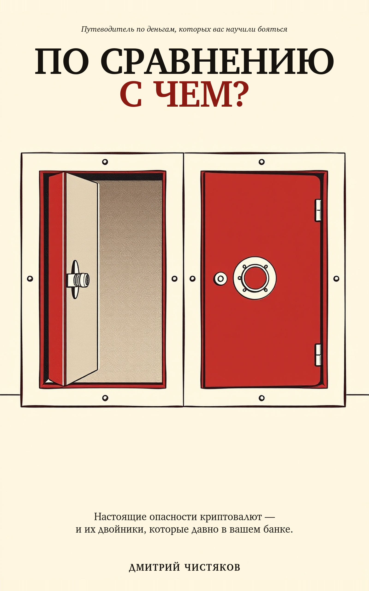

В августе 2024-го человек в Вашингтоне потерял $243 миллиона из-за телефонного звонка. Ни одна строка кода не была взломана. Ни один кошелёк не отказал. Всё сработало ровно так, как спроектировано, — и именно к этой проблеме книга относится всерьёз.
Построенная на публичном каталоге из 650+ задокументированных инцидентов, книга берёт настоящие опасности крипты по одной и ставит каждую рядом с её двойником, уже работающим в обычных финансах. Каждая глава заканчивается честным вердиктом, что хуже, — и вердикты не все в одну сторону.
Крипта не изобрела эти преступления. Она их записала.
Это не рынок с мошенничеством. Это мошенничество с рынком.
Непрозрачность не уменьшает заморозку. Она убирает объяснение.
Эта книга не была запланирована. Годами её автор документировал криптоинциденты в публичном исследовательском каталоге — классифицируя каждую крупную кражу, мошенничество и крах с 2010 года, с источником у каждого утверждения. Где-то после шестисотого инцидента закономерность стало невозможно игнорировать: большинство этих преступлений не были новыми. Технология изменилась. Финансовые механизмы — нет.
Сначала было исследование. Книга — один из его результатов. Исследование остаётся публичным.
Шесть правил, останавливающих большинство краж из книги. Бесплатный постер — распечатайте, поделитесь.
Каждый инцидент в книге существует в публичной записи — судебные документы, отчёты регуляторов, транзакции в блокчейне, которые может прочитать кто угодно. Смотрите сами: индекс проверки — утверждение за утверждением, артефакт за артефактом.
Дмитрий Чистяков — автор OAK, публичного каталога 650+ задокументированных криптоинцидентов. Работал в банковской сфере, кибербезопасности и AI — и написал книгу, которой ему самому не хватало, когда он впервые решал, заходить ли в крипту.